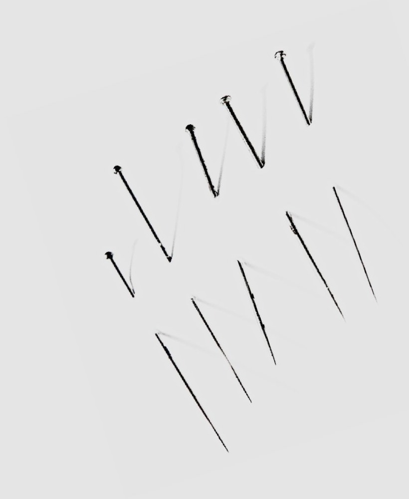
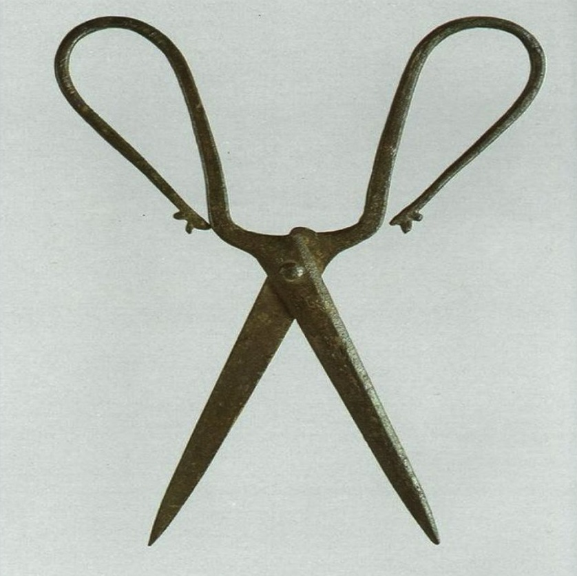
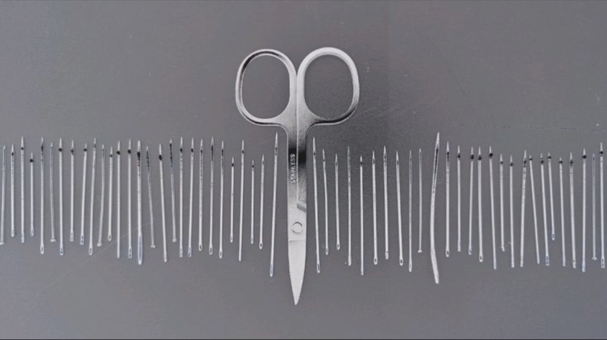

Evening News October
Evening News
London U.K. October THE REIGN OF TERROR IN WHITECHAPEL.
AT THE SCENE OF THE CRIMES ON SUNDAY
SPECIAL

It would be impossible for any pen to do justice to a description of the excitement which prevailed in Whitechapel and its immediate neighbourhood all yesterday, from the time that the first news of these fresh horrors was bruited about until long after midnight. Terror and amazement were depicted in almost every face that one met in the streets of that now notorious district. I moved about the dense throngs which had grown to enormous proportions as the day wore on, and whose numbers seemed to culminate in the afternoon, when people came trooping in from distant parts athirst for the latest news bearing upon these awful tragedies. Trains, trams, and omnibuses disgorged their hundreds of passengers, who wended their way to the two localities which have, for the moment, put Buck's row and Hanbury street into the shade.
A TERRIBLE PANIC
THE REIGN OF TERROR
GOD HELP US
Has taken possession of the entire district, and its effects are to be seen in the wild, terrified faces of the women, and heard in the muttered imprecations of the men who have their homes in the densely populated streets of the East End. The very lads, ready at all times for ribald jest and noisy horse play, stood around in awe struck groups, whispering to each other of the fiendish things that were happening, just as one could have supposed the people stood and talked in Goodman's Fields, near by, more than two centuries ago when the Black Death claimed some of its first victims.
"God help us," exclaimed a poor creature, whose tawdry dress and hardened countenance indicated all too clearly the wretched calling she pursued. "If the human devil who murdered all these women isn't caught, and that pretty soon, too? Why, I might be next! It makes my blood run cold." She was standing, as she spoke, gazing down the alley leading into Mitre square, and from whence could be seen the corner where the policeman had stumbled upon the body of the murdered woman, and at her words other women drew their shawls closer around them with a shudder at the thought of the hideous vendetta which is being waged upon their sex and class.
WHERE WERE THE POLICE
That was the question that assailed one's ears on every hand. It seems incredible that, within the short space of twelve minutes, a man and woman should have entered the deserted precincts of Mitre square, that the man should have murdered his victim, and should have made his escape from the scene, without being seen at all. He must, when he hurried away after accomplishing his devilish purpose, have been reeking with blood. And yet the policeman on the beat is positive that he saw nothing of either the man or the woman within those twelve short minutes until he came upon the latter weltering in her blood.
A FIENDISH CUNNING
After having seen all that was to be seen in and around Mitre square, I came away more than ever impressed with the deliberate, inhuman cunning of the monster who is still abroad in our midst. Mitre square is quite out of the beaten track, is surrounded by warehouses and shops, and would be as deserted at midnight as though it lay in the centre of Salisbury Plain. No safer place, apparently, could possibly have been selected for the commission of such an awful crime, and the murderer, whoever he is, must have been familiar with that fact.
THE CROWD IN BERNER STREET
THE REIGN OF TERROR
TEN INCHES OF STEEL
I found the street literally packed with people of both sexes, all ages, and nearly all classes. Clubmen from the West end rubbed shoulders with the grimy denizens of St George's in the East: daintily dressed ladies, whom a wondering curiosity had drawn to the spot, elbowed their way amid knots of their less favoured sisters. Policemen were there in great numbers, jealously guarding the approach to the yard, reminding one irresistibly of the old adage about locking the stable door after the steed has been stolen.
"When do you expect you'll ketch the murderer, sonny?" "Ketch the murderer?" laughed another dilapidated onlooker. "Not till they puts a bobby to sit upon hevery doorstep in Vitechapel. And then alf on em will be asleep." These taunts show how utterly the poor creatures in that neighbourhood have lost confidence in police protection.
A MAN WITH A BLACK BAG

"I only noticed one person passing, just before I turned in. That was a young man walking up Berner street, carrying a black bag in his hand." "Did you observe him closely, or notice anything in his appearance?" "No, I didn't pay particular attention to him. He was respectably dressed, but was a stranger to me." That was all that my informant had to tell me. I wonder will the detectives think it worth while to satisfy themselves about that black bag?